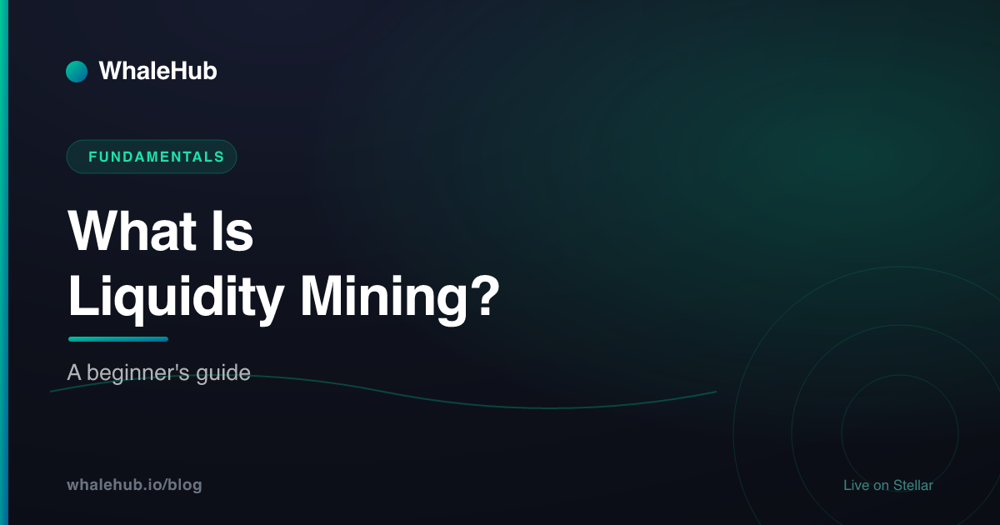

What Is Liquidity Mining? A Beginner's Guide

Liquidity mining is depositing a pair of tokens into a liquidity pool and earning rewards for it — a slice of the pool's trading fees plus extra tokens the protocol emits to attract liquidity. It's one of the oldest ways to earn yield in DeFi, and on Stellar it runs on the Aquarius AMM, where roughly five-second finality and sub-cent fees make frequent claiming and compounding actually worthwhile.
What is liquidity mining?
Liquidity mining is depositing a pair of tokens into a liquidity pool so traders can swap against them, and earning rewards in return. You collect a share of the pool's trading fees plus extra token incentives that the protocol emits to attract liquidity. It is one of the most common ways to earn yield in DeFi.
Every decentralized exchange needs assets sitting in reserve for people to trade against. Instead of paying market makers, most protocols crowdsource those reserves: anyone can become a liquidity provider (LP) by depositing two tokens in equal value into an automated market maker (AMM) pool. In exchange, you receive an LP position that represents your share of the pool.
That position earns money two ways. First, every swap pays a small fee that is split among all LPs. Second — and this is the "mining" part — the protocol mints and hands out a reward token to LPs on top of the fees, to bootstrap deeper liquidity. Together, fees plus emissions are your yield.
The term dates back to the 2020 DeFi boom, when protocols began "distributing" governance tokens to liquidity providers block by block, the way proof-of-work coins were mined. If you're new to the wider ecosystem, our Stellar DeFi guide maps out where liquidity mining sits among staking, lending, and AMMs.
Liquidity mining vs staking
Staking usually means locking a single token to help secure a network or earn protocol rewards, with no exposure to a second asset. Liquidity mining means supplying two tokens to a trading pool, earning fees and incentives, but taking on impermanent loss if the two prices diverge.
The two are often confused because both "lock up tokens to earn more tokens." The critical difference is exposure. When you stake one asset, your token count only changes through rewards. When you provide liquidity, the pool constantly rebalances the ratio of your two assets as their prices move — so the mix you withdraw is rarely the mix you put in.
That extra moving part is the source of both liquidity mining's higher advertised yields and its main risk. Staking is simpler and lower-variance; liquidity mining pays you for taking on price-divergence risk between a pair. If you want the single-asset route, our guide to staking AQUA walks through it step by step.
Liquidity mining vs yield farming
Liquidity mining is the specific act of earning token rewards for providing liquidity. Yield farming is the broader strategy of moving capital between pools, protocols, and reward programs to maximise return. Liquidity mining is often one step inside a larger yield-farming plan.
Think of yield farming as the whole game and liquidity mining as one of its most-used moves. A yield farmer might supply liquidity, then take the LP position and stake it somewhere else, chase a fresh incentive program, or rotate to whichever pool is emitting the most this week. Liquidity mining is simply the earn-rewards-for-providing-liquidity leg of that.
Here's how the three ideas line up:
| Staking | Liquidity mining | Yield farming | |
|---|---|---|---|
| What you deposit | One token | A token pair | Any of the above, often rotated |
| Where reward comes from | Protocol / network rewards | Trading fees + token emissions | Stacked incentives across protocols |
| Main risk | Lock-up, token price | Impermanent loss | Impermanent loss + complexity |
| Effort | Low | Low–medium | High, active management |
| Typical goal | Steady base yield | Fees + incentive rewards | Maximise total return |
If the active, rotate-for-the-best-rate approach appeals to you, we go deep on it in Yield Farming on Stellar.
How rewards and emissions work
Liquidity-mining rewards come from two streams: trading fees paid by swappers, and token emissions the protocol releases on a schedule to incentivize liquidity. Emissions are often directed by governance votes, so pools that attract the most votes receive the largest share of the reward token each period.
Trading fees are organic — the more volume a pool does, the more it pays. Emissions are policy: the protocol decides how many reward tokens to release per period and how to split them across pools. That split is where the strategy lives.
Vote-directed emissions
Many modern AMMs let token holders vote on which pools get emissions. This turns liquidity mining into a two-layer game: provide liquidity to a pool, and make sure that pool is winning enough votes to keep its emissions high. On Stellar, that voting layer is ICE voting on Aquarius, and projects can even offer "bribes" to attract votes to their pool.
The catch for small providers
- Emissions shift every epoch, so last week's best pool may not be this week's.
- Rewards arrive as a separate token that must be claimed, then sold or re-deposited to actually compound.
- On expensive chains, claiming and compounding small amounts can cost more in gas than it earns.
This is exactly the friction that yield optimizers exist to remove — more on that below.
Impermanent loss, explained with numbers
Impermanent loss is the gap between holding two tokens and depositing them in a pool. As prices diverge, the pool rebalances and you end up with more of the falling asset and less of the rising one. A 2x price move on one asset causes roughly 5.7% impermanent loss before fees and rewards.
This is the single most important risk in liquidity mining, and the one beginners underestimate. It's easiest to see with a concrete, glass-box example. Suppose you provide liquidity to a Token A / XLM pool where both are worth $1, and the pool is a standard constant-product AMM (reserves multiplied together stay constant).
Deposit: 100 A ($1) + 100 XLM ($1) = $200 total
Pool rule: A_reserve x XLM_reserve = k (stays constant)
100 x 100 = 10,000 -> k = 10,000
Now A doubles in price: 1 A is worth 2 XLM.
The pool rebalances so that XLM_reserve / A_reserve = 2,
while A_reserve x XLM_reserve still equals 10,000.
A_reserve = sqrt(10,000 / 2) = 70.71 A
XLM_reserve = sqrt(10,000 x 2) = 141.42 XLM
Value of your LP position:
70.71 A x $2 + 141.42 XLM x $1 = $282.84
If you had just HELD the two tokens instead:
100 A x $2 + 100 XLM x $1 = $300.00
Impermanent loss = 300.00 - 282.84 = $17.16 (~5.7%)You still made money — your position rose from $200 to $282.84 — but you'd have $300 if you'd simply held. That ~5.7% gap is the impermanent loss. It's called "impermanent" because if prices return to where they started, the gap closes. It only becomes permanent when you withdraw while prices are diverged.
Two takeaways. First, the wider the price divergence, the larger the loss — a 4x move costs about 20%. Second, fees and emissions are what compensate you for it: a pool is worth mining when its fees plus rewards outrun the impermanent loss. That's also why correlated or stable pairs (two assets that move together) are popular for lower-risk mining.
Liquidity mining on Stellar via Aquarius
On Stellar, you provide liquidity to an Aquarius AMM pool and earn trading fees plus AQUA emissions. Emissions are directed by ICE voting, so the most-voted pools earn the most. Roughly five-second finality and sub-cent fees make frequent claiming and compounding practical instead of gas-prohibitive.
Aquarius is Stellar's main liquidity-incentive protocol, launched in 2021. It layers reward emissions on top of Stellar's native constant-product AMM pools, and its AQUA token decides where those rewards flow. Holders lock AQUA to receive ICE — non-transferable voting power — and vote AQUA emissions toward specific pools. Full mechanics live in Aquarius AMM Explained.
Stellar's economics change what's practical. A base transaction costs 0.00001 XLM and finalizes in about five seconds via the Stellar Consensus Protocol. Reward-claiming and compounding strategies that would be eaten alive by gas on a congested chain become rounding error here — which is the whole reason high-frequency compounding is viable on Stellar at all.
The manual version still has friction, though: you'd lock AQUA for ICE, track which market is hottest each epoch, vote every cycle, then claim and re-deposit rewards by hand. Most people won't do that consistently.
Where WhaleHub removes the friction
WhaleHub is a yield-optimization protocol on Stellar, often called "Convex for Stellar." It pools users' deposits, aggregates their ICE voting power to direct emissions to the highest-yielding Aquarius pool, and auto-compounds the rewards — turning multi-step liquidity mining into a single deposit.
The two-layer game we described — provide liquidity, then keep your pool winning votes — is precisely what WhaleHub automates. Individually, a small holder has negligible ICE weight and pays real effort to claim and re-stake. Pooled together, thousands of holders wield whale-tier voting power and reach a scale no single account could.
There are two ways to earn:
- Staking. Lock AQUA and earn BLUB, WhaleHub's reward token, minted 1 : 1 on stake as a liquid derivative of your staked position. Longer locks earn a higher reward multiplier. The backend claims Aquarius rewards roughly every 30 minutes, swaps to BLUB, and distributes them proportionally.
- Liquidity vaults. Deposit a token pair into an auto-compounding AMM vault; the backend re-deposits rewards roughly 48 times per day, so your position compounds without you lifting a finger. See how auto-compounding works for the mechanics.
Either way, the tedious steps — voting, harvesting, swapping, re-depositing — happen in the background. You keep the exposure decision; WhaleHub keeps the busywork. Check the live APY on the app before you decide.
Liquidity mining is a genuinely useful way to earn — you're being paid to make markets work — but it isn't free money. The reward tokens and fees are real, and so is impermanent loss. Understand the pair you're providing, compare your total yield against simply holding, and lean on tooling that makes the compounding cheap. On Stellar, low fees do a lot of that heavy lifting for you.
Frequently asked questions
What is liquidity mining?
Liquidity mining is depositing a pair of tokens into a liquidity pool so traders can swap against them, and earning rewards in return. You collect a share of the pool's trading fees plus extra token incentives that the protocol emits to attract liquidity. It is one of the most common ways to earn yield in DeFi.
What is the difference between liquidity mining and staking?
Staking usually means locking a single token to help secure a network or earn protocol rewards, with no exposure to a second asset. Liquidity mining means supplying two tokens to a trading pool, earning fees and incentives, but taking on impermanent loss if the two prices diverge.
Is liquidity mining the same as yield farming?
No, but they overlap. Liquidity mining is the specific act of earning token rewards for providing liquidity. Yield farming is the broader strategy of moving capital between pools, protocols, and reward programs to maximise return. Liquidity mining is often one step inside a larger yield-farming plan.
What is impermanent loss in liquidity mining?
Impermanent loss is the gap between holding two tokens and depositing them in a pool. As prices diverge, the pool rebalances and you end up with more of the falling asset and less of the rising one. A 2x price move on one asset causes roughly 5.7% impermanent loss before fees and rewards.
How does liquidity mining work on Stellar?
On Stellar, you provide liquidity to an Aquarius AMM pool and earn trading fees plus AQUA emissions. Emissions are directed by ICE voting, so the most-voted pools earn the most. Roughly five-second finality and sub-cent fees make frequent claiming and compounding practical.
Is liquidity mining profitable?
It can be, but returns are not guaranteed. Fees and token emissions add up, yet impermanent loss, falling reward prices, and changing emission schedules can erode gains. Stable or correlated pairs reduce impermanent loss. Always compare rewards against simply holding, and check the live APY before depositing.
WhaleHub is a yield-optimization protocol on Stellar. We stake AQUA, aggregate ICE voting power, and auto-compound Aquarius rewards for stakers. This series explains the Stellar DeFi stack in plain English.
Read more


Mine liquidity without the busywork
Deposit once and let WhaleHub's aggregated ICE and auto-compounding vaults do the voting, harvesting, and re-investing for you.
Launch the appThis article is for educational purposes only and is not financial advice. DeFi involves risk, including the potential loss of capital. Do your own research and consult a qualified professional before making investment decisions.